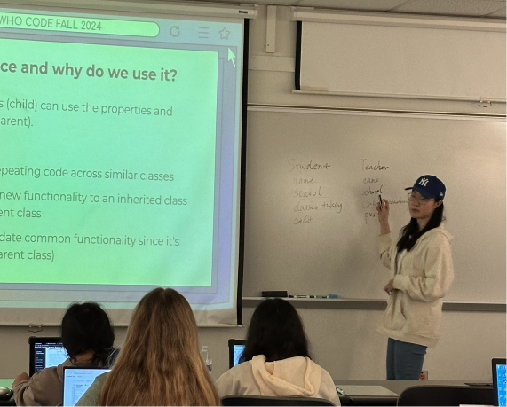

Check Out Our Roles!
Teaching Assistant (2-3 hours/week)
- Assists the facilitators with the hands-on activities in the classroom every other week
- Provides support to students who need help with academic day-to-day
- Teaching assistants will also be paired with a student to serve as a "mentor"
- Be proactive in helping students who are struggling due to zoom meetings/semi-frequent communication/updates
- In-class: all basic teaching assistants will help by walking around and helping students during class as well as providing dynamic coding problems
- We meet every Monday, Tuesday, or Wednesday from 5-6:30

Public Outreach Committee (2 hours/week)
- Work to promote the club at local and online high schools
- Maintain and develop the school/teacher community
- Responsible for maintaining an online presence on social media
- Work to establish good contacts/relationships
- Responsible for maintaining an online presence on social media platforms
- Creating graphics for our events, meetings, etc.
- Help manage our club's social media

Activity Committee (2 hours/week)
- Create lesson outlines and slides for facilitators to utilize each week
- Incorporating Python teaching with Web Code curriculum
- Research and gather a weekly coding puzzle/brain teaser for students
- Create activities to maintain student engagement
- Research and gather a weekly coding puzzle/brain teaser for students to solve during class
- Work with curriculum staff to incorporate coding practice